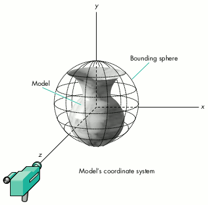

QuickTime VR is a new technology from Apple that provides users with a virtual
reality experience through interactive panoramic and object movies. You can generate
images for QuickTime VR movies with either a real camera or a three-dimensional
rendering system such as QuickDraw 3D. Here you'll learn how to create images from
QuickDraw 3D models and generate movies from these images with the QuickTime VR
Authoring Tools Suite version 1.0.
QuickTime VR lets you create two kinds of interactive virtual reality
movies:panoramic movies and object movies. In a panoramic movie, users can
interactively view a scene at nearly all camera angles from a particular point in
space, which gives them the impression of being there and looking around. In an object
movie, users can interactively spin an object around and thereby see it from all sides.
Panoramic and object movies can be linked together or used separately.
QuickTime VR has several advantages over three-dimensional modeling systems for
making interactive movies. Its movie files are much smaller than complex 3D models
in situations where complete interactivity with the scene isn't necessary, or where
the scene contains complex objects or large numbers of textures. With QuickTime VR,
the complexity of the scene and the number of textures used are irrelevant to runtime
performance, so even users with lower-end machines can effectively interact with the
scene. Finally, a QuickTime VR scene needs only a few megabytes of free space in
memory, much less than the enormous amount of RAM usually taken up by complex 3D
scenes.
You can create QuickTime VR movies using either digitized images captured from a real
camera or synthetic images generated by a 3D rendering system, such as QuickDraw
3D. In this article, you'll learn how to generate images with QuickDraw 3D and
convert them to QuickTime VR movies. To make a panoramic movie, you create a
panoramic image from a 3D scene, generate a linear QuickTime movie from the image,
and convert the linear movie to an interactive panoramic movie using the QuickTime
VR Authoring Tools Suite (ATS). (The ATS is a set of tools that you use from within
MPW, the Macintosh Programmer's Workshop.) To create an object movie, you
generate a series of images from a 3D model, add the images to a linear QuickTime
movie, and then use the QuickTime VR ATS to convert the linear movie to an interactive
object movie.
Before we get into the specifics of making movies, we'll explore the basic concepts of
QuickTime VR. We assume you have a general understanding of QuickDraw 3D, which
you can get by reading "QuickDraw 3D: A New Dimension for Macintosh Graphics" in
develop Issue 22 and "The Basics of QuickDraw 3D Geometries" in develop Issue 23.
You can learn all about QuickDraw 3D in the book 3D Graphics Programming With
QuickDraw 3D.
This issue's CD contains all the code necessary to generate panoramic images and linear
object movies from QuickDraw 3D models. For brevity, the listings in the article omit
error handling; the code on the CD includes the complete versions of these functions.
The basic components of QuickTime VR movies are panoramas, nodes, objects, and
scenes.
SHOOTING AN OBJECT
For object movies, you need to photograph the model (or the real object) from all
directions, as shown in Figure 1. All vertical camera positions above the center of the
model are considered positive, and all positions below it are considered negative. The
vertical position with the camera directly above the model looking down at it is called
vertical pan 90deg.; the vertical position directly below and looking up is called
vertical pan -90deg.. Vertical pan 0deg. is at the model's center (equator). Horizontal
positions are measured in degrees from horizontal pan 0deg. to 360deg.. Horizontal
pan 0deg. is typically at the back of the model.
Figure 1. Shooting a model (or a real object)
Images must be stored as frames in row order from top to bottom in a linear
QuickTime movie. For best results, we (along with the QuickTime VR documentation)
recommend that you have a frame every 10deg. between positions in both the
horizontal and vertical direction. If you shoot at increments greater than 10deg., the
motion of the model in the QuickTime VR movie will be choppier when the user turns
it. If you shoot at increments of less than 10deg., the motion will be smoother, but
you'll need more disk space to store all the frames. Whatever increment you choose, it
should be consistent between all horizontal and vertical frames for the object and
divide evenly into the horizontal and vertical pan ranges.
Your first frame at each horizontal position should be of the back of the model, so that
the frame showing the front of the model is halfway through the series at that
horizontal position. This improves disk access time at run time since the user will
most likely be looking at the front of the model.
SHOOTING A PANORAMA
If you're using a real camera to shoot a panorama, you need to take the appropriate
number of equally spaced pictures in a circle, as shown in Figure 2.
Figure 2. Shooting a panorama
Although this sounds simple, there are a few things you must be aware of. First, you
need to make sure you're taking the right number of shots for the lens you're using
(see Chapter 6 in Volume 1 of the QuickTime VR ATS documentation for a full
explanation of this). The entire camera rig should be level at all times, and the nodal
point of the lens should be directly over the point of rotation of the rig. For best
results, you should also have a consistent overlap between images; the more overlap,
the better (30% to 50% is recommended). Finally, you should maintain consistency
between images in each panorama by using similar exposure and a fixed focus.
Because this can get quite complicated, Apple strongly recommends the use of a
professional photographer for making any production-quality titles. However, one way
around this is to use rendered data, as we do in this article. The programmatic control
we have over the "virtual" camera in a 3D environment such as QuickDraw 3D
eliminates all of the problems just mentioned.
The sample code on this issue's CD enables you to make object and panoramic movies
from any 3DMF file (a file that conforms to the QuickDraw 3D Object Metafile
standard). For either type of movie, the code creates a new document record structure,
reads in the model from a 3DMF file, renders the images, and writes out the images in
a form that the QuickTime VR tools can work with. Here we'll look at the first few
steps, which are common to both types of movies. The other steps for making
QuickTime VR movies -- rendering and writing out the images and converting linear
movies to interactive movies -- are different for object and panoramic moviemaking
and are described later.
CREATING A NEW DOCUMENT
All of our scene information is stored in a document record structure, shown in Listing
1.
Listing 1. The document record structure for a scene
typedef struct _DocumentRecord {
CWindowPtr theWindow; // Display window
FSSpec theFileSpec; // Model file specification
short fRefNum; // and reference
GWorldPtr drawContextOffScreen; // Offscreen buffer
TQ3GroupObject documentGroup; // Main group for the document
TQ3ViewObject theView; // The document's view object
TQ3Matrix4x4 modelRotation; // The model transform
TQ3Point3D documentGroupCenter; // Center of the model
... // Miscellaneous view, model, and QuickTime file details
} DocumentRecord, *DocumentPtr, **DocumentHandle;
The MyNewDocument function (Listing 2) creates the document record structure and
sets up the view, camera, and other elements associated with the scene. It also adds the
background buffer and window used to display the rendered images of the scene.
Listing 2. Creating a new document record structure
DocumentPtr MyNewDocument()
{
DocumentPtr theDocument;
CWindowPtr theWindow;
TQ3DrawContextObject theDrawContext;
Rect myBounds = kMyBoundsRect;
TQ3CameraObject camera = NULL;
RGBColor blackColor = kMyBlackColor;
...
theDocument = (DocumentPtr)NewPtrClear(sizeof(DocumentRecord));
// Create the window for the document record and add references to
// the document record.
theWindow = (CWindowPtr)NewCWindow(0L, &myBounds,
"\pRendering Window", true, documentProc, (WindowPtr)-1L,
true, NULL);
theDocument->theWindow = theWindow;
// Create and set up the offscreen GWorld/context.
// ** Notice that QuickDraw 3D prefers direct color. **
NewGWorld(&theDocument->drawContextOffScreen, 32,
&theWindow->portRect, nil, nil, 0L);
...
SetGWorld(theDocument->drawContextOffScreen, nil);
EraseRect(&theDocument->drawContextOffScreen->portRect);
...
// Create the new pixmap draw context.
theDrawContext = MyNewDrawContext(theDocument);
// Create the view and set up the view attributes.
...
// Initialize the model rotation and transitions used for object
// movie rotations.
Q3Matrix4x4_SetIdentity(&theDocument->modelRotation);
// Add more model and view properties to the document record.
...
// Create the camera and add it to the view.
camera = MyNewCamera(theDocument->theWindow);
Q3View_SetCamera(theDocument->theView, camera);
Q3Object_Dispose(camera);
// Add the renderer to the view. Set the window's GWorld.
Q3View_SetRendererByType(theDocument->theView,
kQ3RendererTypeInteractive);
SetGWorld(theWindow, nil);
return (theDocument);
}
CREATING THE CAMERA
The camera used to render the images for the movies is created by the MyNewCamera
function, shown in Listing 3.
Listing 3. Creating the rendering camera
TQ3CameraObject MyNewCamera(CWindowPtr theWindow)
{
TQ3ViewAngleAspectCameraData perspectiveData;
TQ3CameraObject camera;
// For object movies, we set the field of view to 30 degrees (or
// 30.0*kQ3Pi/180.0 radians). For panoramic movies, we set it to
// 74 degrees (or 74*kQ3Pi/180.0 radians). QuickDraw 3D requires
// angles to be in radians, while QuickTime VR requires them to
// be in degrees.
float fieldOfView = 30.0*kQ3Pi/180.0;
TQ3Status returnVal = kQ3Failure;
// Assign default placement.
perspectiveData.cameraData.placement.cameraLocation
= kMyDefaultFrom;
perspectiveData.cameraData.placement.pointOfInterest
= kMyDefaultTo;
perspectiveData.cameraData.placement.upVector = kMyDefaultUp;
perspectiveData.cameraData.range.hither = kMyDefaultHither;
perspectiveData.cameraData.range.yon = kMyDefaultYon;
// Assign standard view port.
perspectiveData.cameraData.viewPort.origin.x = -1.0;
perspectiveData.cameraData.viewPort.origin.y = 1.0;
perspectiveData.cameraData.viewPort.width = 2.0;
perspectiveData.cameraData.viewPort.height = 2.0;
perspectiveData.fov = fieldOfView;
perspectiveData.aspectRatioXToY =
(float) (theWindow->portRect.right
- theWindow->portRect.left) /
(float) (theWindow->portRect.bottom
- theWindow->portRect.top);
camera = Q3ViewAngleAspectCamera_New(&perspectiveData);
return (camera);
}
For object movies, we set the field of view to approximately 30deg.. This is not a fixed
number; you can use any number that you see fit, based generally on the aspect ratio of
your viewing window and how much information you'd like to display inside it.
For panoramic movies, we set the field of view to 74deg.. This matches the horizontal
field of view of a 15mm lens for our image. We specify the horizontal rather than
vertical field of view since our image is taller than it is wide (768 x 512 pixels), and
QuickDraw 3D requires the field of view to be specified as that of the shorter side of
the image (whether width or height). We calculate the horizontal field of view based on
the size of our image and the known vertical field of view of a 15mm lens (97deg., as
specified in Chapter 9 of the QuickTime VR ATS documentation).
READING IN THE MODEL
For the model to be read from a 3DMF file, you must first create 3D file and storage
objects associated with that file. Once they've been created, you build up the model by
reading in all the drawable objects from the file and adding them to a group, as shown
in Listing 4.
Listing 4. Reading in the model
TQ3Status MyReadScene(TQ3FileObject file, DocumentPtr theDocument)
{
TQ3Object object;
TQ3Boolean isEOF;
TQ3ViewObject view;
TQ3Object model;
TQ3GroupObject lightGroup = NULL;
// Create the new model and get the view.
model = Q3DisplayGroup_New();
theDocument->documentGroup = model;
view = theDocument->theView;
// Collect all drawable objects (into the model) and collect any
// lights (into the lightGroup).
while ((isEOF = Q3File_IsEndOfFile(file)) == kQ3False) {
object = Q3File_ReadObject(file);
if (Q3Object_IsDrawable(object))
Q3Group_AddObject(model, object);
if (Q3Object_IsType(object, kQ3SharedTypeViewHints))
if (view)
Q3ViewHints_GetLightGroup((TQ3ViewHintsObject)object,
&lightGroup);
if (object != NULL)
Q3Object_Dispose(object);
}
// Add any lights found to the view. Otherwise create default
// lights.
if (lightGroup) {
Q3View_SetLightGroup(view, lightGroup);
Q3Object_Dispose(lightGroup);
}
else
MyNewLights(theDocument);
Q3File_Close(file);
return kQ3Success;
}
If the model includes any lighting, we use those lights; otherwise we create our own
lighting for the model.
GETTING THE DIMENSIONS OF THE MODEL
We must know the dimensions of the entire model as well as its center in order to place
the camera in its initial position and to guide both camera and model transformations.
You obtain the dimensions and center of an already constructed model by getting the
model's bounding sphere with the function MyGetBoundingSphere (Listing 5). The
bounding sphere is another 3D object that fully surrounds the model and has as its
center the exact center of the model.
Listing 5. Getting the model's bounding sphere
void MyGetBoundingSphere(TQ3ViewObject viewObject, TQ3GroupObject
mainGroup, TQ3BoundingSphere *viewBSphere)
{
TQ3Status status;
Q3View_StartBoundingSphere(viewObject,
kQ3ComputeBoundsApproximate);
do {
status = Q3DisplayGroup_Submit(mainGroup, viewObject);
} while (Q3View_EndBoundingSphere(viewObject, viewBSphere) ==
kQ3ViewStatusRetraverse);
}
For object movies, the bounding sphere has an additional purpose. Although a 3D model
from a QuickDraw 3DMF file may contain more than one geometric object, a QuickTime
VR object movie has only one geometric object or one group of objects. Thus, we use
the bounding sphere to get the dimensions of the entire group of objects.
Now we'll get into the specifics of making a QuickTime VR object movie. The
MyConvert3DMFToObject function (shown in Listing 6) drives the entire process,
from creating the new document to generating the linear object movie. You use the
QuickTime VR ATS to generate an interactive object movie from this linear movie.
Listing 6. Converting 3DMF files to linear object movies
void MyConvert3DMFToObject(FSSpec *myFSS)
{
DocumentPtr theDocument;
// Create the document record and make the view, camera, lights,
// window, and so on.
theDocument = MyNewDocument();
// Read in the model and add it to the document record's group.
MyOpenFile(myFSS);
// Set up the initial camera position.
MyInitObjCamera(theDocument);
// Draw initial view to the screen.
MyDrawOffScreen(theDocument);
MyDrawOnScreen(theDocument);
// Assign the codec type.
theDocument->theCodecType = kMyCodec;
// Generate all the images and add them to the movie.
MyGenerateObjImages(theDocument, 36, 19, 360, 0, 90, -90);
...
}
DOING THE MODEL AND CAMERA WORK
Photographing a real object involves using a spherical camera rig to rotate a camera
around the object. For 3D models, it's just as easy to rotate the model in front of a
stationary camera. Furthermore, since the camera doesn't move in this case, the
lighting is easier to manage because it doesn't need to be rotated with the camera
(unless you want the object to appear to be lighted from a certain angle).
In our case, we'll render images of the model by rotating the model around two of its
axes while the camera views it from the third axis; thus the camera gets a view of the
model from every angle. In our case, we'll place the camera along the z axis and rotate
the model around the x and y axes. The initial positions of the camera and the model can
be seen in Figure 3.

Figure 3. Initial positions of the camera and the model for object movies
The initial placement of the camera for an object movie is performed by the function
MyInitObjCamera, shown in Listing 7. First we get the bounding sphere of the
drawable group of the model. From this we can get the center 3D point of the drawable
group (as the origin of the bounding sphere) and the radius. From the center point we
place the camera a distance of five times the radius down the z axis from the object.
Listing 7. Setting the initial camera position for an object movie
TQ3Point3D MyInitObjCamera(DocumentPtr theDocument)
{
TQ3BoundingSphere viewBSphere;
float viewRadius;
// Get the bounding sphere of the drawable group
// (the entire model) in the view.
MyGetBoundingSphere(theDocument->theView,
theDocument->documentGroup, &viewBSphere);
// Get the bounding sphere's center and radius.
theDocument->documentGroupCenter = viewBSphere.origin;
viewRadius = viewBSphere.radius;
// Position the camera down the z axis from the bounding sphere
// based on the center and the radius.
MyPlaceCamera(theDocument, theDocument->documentGroupCenter.x,
theDocument->documentGroupCenter.y,
theDocument->documentGroupCenter.z +
kMyDistanceFactor*viewRadius + 1.0,
theDocument->documentGroupCenter.x,
theDocument->documentGroupCenter.y,
theDocument->documentGroupCenter.z +
kMyDistanceFactor*viewRadius);
return (theDocument->documentGroupCenter);
}
We rotate the model by repeatedly modifying the model's transform object. The
function MyRotateObjectX rotates the object around its x axis (see Listing 8). An
analogous function that's not shown here, MyRotateObjectY, rotates it around the y
axis.
Listing 8. Rotating the model for object rendering
void MyRotateObjectX(DocumentPtr theDocument, float angle)
{
TQ3Matrix4x4 tempMatrix;
Q3Matrix4x4_SetTranslate(&tempMatrix,
-theDocument->documentGroupCenter.x,
-theDocument->documentGroupCenter.y,
-theDocument->documentGroupCenter.z);
Q3Matrix4x4_Multiply(&theDocument->modelRotation, &tempMatrix,
&theDocument->modelRotation);
Q3Matrix4x4_SetRotate_XYZ(&tempMatrix, angle, 0.0, 0.0);
Q3Matrix4x4_Multiply(&theDocument->modelRotation, &tempMatrix,
&theDocument->modelRotation);
Q3Matrix4x4_SetTranslate(&tempMatrix,
theDocument->documentGroupCenter.x,
theDocument->documentGroupCenter.y,
theDocument->documentGroupCenter.z);
Q3Matrix4x4_Multiply(&theDocument->modelRotation, &tempMatrix,
&theDocument->modelRotation);
}
We step through the model rotations to create the images needed for the linear object
movie with the MyGenerateObjImages function, shown in Listing 9. In this function,
we iterate over y angles (rotating around the x axis) while iterating over x angles
(rotating around the y axis). This stepping takes us from the position yAngle =
maxVPan, xAngle = minHPan to the position yAngle = minVPan, xAngle = maxHPan -
minHPan. At each step in the x and y angles, the model is rotated and then rendered. The
resulting images are added to a previously created movie, as described in the next
section. Note that QuickTime VR likes angles in degrees and QuickDraw 3D likes angles
in radians, so we have to do these conversions.
Listing 9. Generating images for the linear object movie
void MyGenerateObjImages(DocumentPtr theDocument, short rows, short
columns, long maxHPan, long minHPan, long maxVPan, long minVPan)
{
float xStart, yStart, xStep, yStep, xAngle, yAngle;
// Assign stepping angles.
yStep = ((float)(maxVPan-minVPan))/(float)(rows-1);
xStep = ((float)(maxHPan-minHPan))/(float)(columns-1);
MyPrepareDestMovie(theDocument);
for (yAngle = maxVPan; yAngle >= minVPan; yAngle -= yStep) {
for (xAngle = 0; xAngle <= maxHPan-minHPan; xAngle += xStep) {
// Rotate the object to the correct position.
xStart = (-kQ3Pi*(xAngle -
((float)(maxHPan-minHPan))/2.0))/180.0;
yStart = kQ3Pi*((float)yAngle)/180.0;
MyRotateObjectY(theDocument, xStart);
MyRotateObjectX(theDocument, yStart);
// Render the model (to get a PixMap image).
MyDrawOffScreen(theDocument);
MyDrawOnScreen(theDocument);
// Add the rendered PixMap image to the movie.
MyAddImageToMovie(theDocument);
// Undo the rotation.
MyRotateObjectX(theDocument, -yStart);
MyRotateObjectY(theDocument, -xStart);
}
}
MyCloseDestMovie(theDocument);
}
CONSTRUCTING THE LINEAR OBJECT MOVIE
The destination movie is an ordinary QuickTime movie. The movie file, track, and
track media need to be set up before rendered images can be added to the movie. The
images are added as frames to a track. (See Inside Macintosh: QuickTime for more
details about this process.) The movie is constructed in the function
MyPrepareDestMovie, shown in Listing 10.
Listing 10. Creating the destination linear object movie
OSErr MyPrepareDestMovie(DocumentPtr theDocument)
{
long keyFrameRate, compressedFrameSize;
short frameRate, width, height, i;
CodecComponent theCodec;
FSSpec theFSSpec;
TimeScale dstTimeScale;
TimeValue duration;
CodecQ spatialQuality;
Str255 movieName = "\pObjectMovie";
keyFrameRate = 1; // Every frame must be a key frame. If
// not, we'll get garbage around the edges
// of our objects when we rotate them.
// QuickTime refreshes only key frames
// completely.
theCodec = anyCodec; // We'll use what's there
spatialQuality = codecHighQuality; // and make it look pretty.
frameRate = 10; // This can be any value.
dstTimeScale = 600; // This can be any value that's a multiple
// of frameRate.
duration = dstTimeScale/frameRate;
width = theDocument->theWindow->portRect.right -
theDocument->theWindow->portRect.left;
height = theDocument->theWindow->portRect.bottom -
theDocument->theWindow->portRect.top;
theFSSpec = theDocument->theFileSpec;
BlockMove(movieName, theFSSpec.name, movieName[0]+1);
CreateMovieFile(&theFSSpec, creatorType, 0,
createMovieFileDeleteCurFile, &theDocument->dstMovieRefNum,
&theDocument->dstMovie);
theDocument->dstTrack = NewMovieTrack(theDocument->dstMovie,
((long)width) << 16, ((long)height) << 16, 0);
theDocument->dstMedia = NewTrackMedia(theDocument->dstTrack,
VideoMediaType, dstTimeScale, 0, 0);
BeginMediaEdits(theDocument->dstMedia);
GetMaxCompressionSize(theDocument->drawContextOffScreen
->portPixMap,
&theDocument->drawContextOffScreen->portRect, 32,
spatialQuality, theDocument->theCodecType, theCodec,
&compressedFrameSize);
theDocument->compressedData = NewHandle(compressedFrameSize);
theDocument->compressedDataPtr =
StripAddress(*(theDocument->compressedData));
HLock(theDocument->compressedData);
theDocument->idh = (ImageDescriptionHandle)NewHandle(4);
...
}
We add the rendered images to the movie with the QuickTime function AddMediaSample,
which is called from within the function MyAddImageToMovie (Listing 11).
MyAddImageToMovie is called after each model rendering, as seen earlier in the
MyGenerateObjImages function.
Listing 11. Adding images to the linear object movie
OSErr MyAddImageToMovie(DocumentPtr theDocument)
{
CodecQ spatialQuality;
TimeValue duration, currentTime;
spatialQuality = codecHighQuality;
duration = 60;
LockPixels(theDocument->drawContextOffScreen->portPixMap);
CompressImage(theDocument->drawContextOffScreen->portPixMap,
&theDocument->drawContextOffScreen->portRect,
spatialQuality, theDocument->theCodecType, theDocument->idh,
theDocument->compressedDataPtr);
UnlockPixels(theDocument->drawContextOffScreen->portPixMap);
AddMediaSample(theDocument->dstMedia, theDocument->compressedData,
0, (**(theDocument->idh)).dataSize, duration,
(SampleDescriptionHandle)theDocument->idh, 1, 0,
¤tTime);
...
}
GENERATING THE INTERACTIVE OBJECT MOVIE
To generate the interactive object movie, open the linear movie you just created with
the Navigable Movie Player application (in the QuickTime VR ATS) and choose the Add
Navigable Data menu item. This brings up the dialog shown in Figure 4. Fill in the
fields with the values shown and click OK to change the linear movie to an interactive
movie. Turn the model to the position you want it to be in at the beginning of the
interactive movie, choose the Set Poster View menu item, and you're done!
Figure 4. The Add Navigable Data dialog
There are two approaches to creating panoramic movies. One way is to simulate a real
camera, rotate the camera to generate a series of images, and then "stitch" the images
together into a single 360deg. panoramic PICT file with the QuickTime VR stitching
tool. This panoramic picture file can be converted first to a linear movie and then to an
interactive movie with the QuickTime VR ATS. This is the technique we'll look at first.
You can also render a single panoramic image directly; this avoids the need for the
stitching tool and enables us to convert the image into an interactive panoramic movie
with only one line of script. The setup is similar for both approaches.
Throughout the QuickTime VR documentation, examples and references assume a
vertically oriented, 360deg. full panorama that's 768 pixels across by 2496 pixels
high, captured with a 15mm lens using portrait orientation. This is exactly the
panorama we'll create.
Before you begin making the movie, you need to determine the number of shots
required to make your panorama. For a real 360deg. panorama, the number of shots is
a function of the length of your lens and the amount of overlap between the shots. For a
rendered panorama, however, the number of shots is a function only of the horizontal
field of view. Because the camera position and lighting conditions are controlled in the
code, overlap between the shots isn't necessary. You can specify any amount of overlap,
but theoretically a one-pixel overlap is all that's required.
In our case, we'll simulate the camera that's recommended in the QuickTime VR
documentation -- that is, a camera with a 15mm lens. To be consistent with the
examples in the documentation, we'll shoot 12 pictures, each 30deg. apart. This will
give us an overlap of about 50%.
The function MyConvert3DMFToPano (Listing 12) drives the entire panoramic
moviemaking process. Much like MyConvert3DMFToObject, this function creates a
document, reads in the model, and renders the appropriate images.
Listing 12. Converting 3DMF files to panoramic images
void MyConvert3DMFToPano(FSSpec *myFSS)
{
DocumentPtr theDocument;
// Create the document record.
theDocument = MyNewDocument();
// Read the model into the document record.
MyOpenFile(myFSS);
// Set up the initial camera position.
MyInitPanoCamera(theDocument);
// Draw initial view to the screen.
MyDrawOffScreen(theDocument);
MyDrawOnScreen(theDocument);
...
// Create a series of images to stitch together into a panorama.
MyGeneratePanoFrames(theDocument);
// To create a single panoramic image, call
// MyGeneratePanoMovieDirect instead of MyGeneratePanoFrames.
...
}
DOING THE MODEL AND CAMERA WORK
The initial placement of the camera is performed by the function MyInitPanoCamera
(Listing 13). It first gets the bounding sphere of the model's drawable group, and from
the bounding sphere gets the center 3D point of the group (as the origin of the
bounding sphere). Of course, you can place your camera anywhere you like in the
scene. For simplicity, we placed our camera in the center. From that position, the
camera is rotated to create the images.
Listing 13. Setting the initial camera position for a panoramic movie
TQ3Point3D MyInitPanoCamera(DocumentPtr theDocument)
{
TQ3BoundingSphere viewBSphere;
float viewRadius;
// Get the bounding sphere of the drawable group
// (the entire model) in the view.
MyGetBoundingSphere(theDocument->theView,
theDocument->documentGroup, &viewBSphere);
// Get the bounding sphere's center and radius.
theDocument->documentGroupCenter = viewBSphere.origin;
viewRadius = viewBSphere.radius;
// Position the camera in the center of the bounding sphere.
MyPlaceCamera(theDocument, theDocument->documentGroupCenter.x,
theDocument->documentGroupCenter.y,
theDocument->documentGroupCenter.z,
theDocument->documentGroupCenter.x,
theDocument->documentGroupCenter.y,
theDocument->documentGroupCenter.z + 1.0);
return (theDocument->documentGroupCenter);
}
For panoramic rendering, we rotate the camera around its y axis with the function
MyRotateCameraY, shown in Listing 14. To do the rotation, we do the equivalent of
translating to local coordinates, rotate, and then translate back to world coordinates.
We do the transformation by making a rotation matrix about the local y axis (the up
vector) at our location, getting our local z axis (by subtracting the point of interest
from the current location), and then rotating the z vector around the y axis. We then
apply this transformation to get a new point of interest. The rectangles encircling the
camera in Figure 2 represent the images rendered after each camera rotation.
Listing 14. Rotating the camera for panoramic rendering
void MyRotateCameraY(DocumentPtr theDocument, float dY)
{
TQ3CameraObject camera;
TQ3CameraPlacement cameraPos;
TQ3Matrix4x4 myRotation;
TQ3Vector3D initialVector, rotatedVector;
Q3View_GetCamera(theDocument->theView, &camera);
Q3Camera_GetPlacement(camera, &cameraPos);
// Get the z vector.
Q3Point3D_Subtract(&cameraPos.pointOfInterest,
&cameraPos.cameraLocation, &initialVector);
// Rotate around the y axis.
Q3Matrix4x4_SetRotateAboutAxis(&myRotation,
&cameraPos.cameraLocation, &cameraPos.upVector, dY);
// Rotate the z vector around the y axis.
Q3Vector3D_Transform(&initialVector, &myRotation, &rotatedVector);
// Get the point of interest from the rotated vector. The upVector
// doesn't change.
Q3Point3D_Vector3D_Add(&cameraPos.cameraLocation, &rotatedVector,
&cameraPos.pointOfInterest);
Q3Camera_SetPlacement(camera, &cameraPos);
Q3View_SetCamera(theDocument->theView, camera);
Q3Object_Dispose(camera);
}
To create a series of images, we step through the camera rotations with the
MyGeneratePanoFrames function (Listing 15). Here we rotate the camera 30deg. at a
time, render an image, and write the image to a PICT file. This gives us 12 PICT files
named 01 through 12 that can be used in a very straightforward manner by the
QuickTime VR ATS. To create a single panoramic image, you use the function
MyGeneratePanoMovieDirect, as shown later.
Listing 15. Generating a series of images for a panoramic movie
void MyGeneratePanoFrames(DocumentPtr theDocument)
{
PicHandle thePict;
float zAngle;
long counter = 0;
Str255 fName;
GWorldPtr gw;
GDHandle gd;
FSSpec outSpec;
GetGWorld(&gw, &gd);
SetGWorld(theDocument->theWindow, nil);
outSpec = theDocument->theFileSpec;
for (zAngle = 360; zAngle >0; zAngle -= 30) {
short i;
MyRotateCameraY(theDocument, -30.0*kQ3Pi/180.0);
SetGWorld(theDocument->theWindow, nil);
MyDrawOffScreen(theDocument);
MyDrawOnScreen(theDocument);
SetGWorld(theDocument->drawContextOffScreen, nil);
thePict =
OpenPicture(
&theDocument->drawContextOffScreen->portRect);
LockPixels(theDocument->drawContextOffScreen->portPixMap);
CopyBits((BitMap*)&theDocument->drawContextOffScreen->portPixMap,
(BitMap*)&theDocument->drawContextOffScreen->portPixMap,
&theDocument->drawContextOffScreen->portRect,
&theDocument->drawContextOffScreen->portRect,
srcCopy, NULL);
UnlockPixels(theDocument->drawContextOffScreen->portPixMap);
ClosePicture();
... // Set up the outSpec for the next image.
MySavePICT(thePict, &outSpec);
KillPicture(thePict);
}
...
}
GENERATING THE INTERACTIVE PANORAMIC MOVIE
You use the MPW tools and scripts provided in the QuickTime VR ATS to generate your
interactive panoramic movie. (See the QuickTime VR ATS documentation for more
information.)
Stitching the images. The stitching tool, called by the Stitch768 script, joins the
series of computer-rendered images of your panorama into a single 360deg.
panoramic PICT file. It's also used to stitch digitized photographic images together. The
following example shows a portion of a stitch worksheet, with appropriate values set
for each of the input variables. The stitching tool will use images numbered from 01 to
12 located on the drive named HappyMac.
set panInFolder "HappyMac:RenderedFrames:" set panOutFolder "HappyMac:RenderedFrames:" set panRotate 0 set panX 100 set panDX 20 set panY 0 set panDY 10 export panInFolder panOutFolder panRotate panX panDX panY panDY Stitch768 01-12 MyPano.srcPict
This script stitches your images into a vertically oriented, 360deg. full panorama
that's 768 pixels across by 2496 pixels high, named MyPano.srcPict.
Dicing the image into a linear movie. The SrcPictToMovie script calls the
dicing tool, which compresses your PICT file and divides it into equal-sized sections
called tiles. For example, a standard-size panorama is "diced" into 24 tiles, 1 across
by 24 down. Since we haven't included hot spots in our movie, our worksheet will
include only one line, which calls the SrcPictToMovie script:
SrcPictToMovie "HappyMac:RenderedFrames:MyPano.srcPict" [[partialdiff]] "HappyMac:RenderedFrames:MyPano.srcMoov"
This script dices your 360deg. panoramic PICT into a standard QuickTime linear movie
using 1-by-24 tiling and the Cinepak compressor.
Converting the linear movie to an interactive movie. The
MakeSingleNodeMovie script takes the linear movie we just created and generates an
interactive panoramic movie. Since we're creating a very standard type of interactive
movie, this script does everything we need.
This example creates a single-node interactive panoramic movie file named
My3DMovie:
MakeSingleNodeMovie "MyPano.srcMooV" "My3DMovie"
RENDERING YOUR PANORAMA DIRECTLY
You can avoid using the stitching tool by rendering your panorama directly. However,
since QuickDraw 3D supports rendering directly to a plane but not to a cylinder, we
have to approximate cylindrical rendering with a "slit" approach, using the cameras
available to us.
The slit approach is the equivalent of using a real panoramic slit camera, which spins
around, taking very thin pictures and laying them next to each other on the film. When
simulating cylindrical rendering, we do the camera work described earlier, but
instead of rotating 30deg. at a time and grabbing each frame, we rotate a very small
amount each time and just grab a slit out of the middle of each frame, thus
approximating a cylinder. The narrower the slit width, the closer we get to a true
cylinder. If you're curious about the mathematics of slit sizes, see "Calculating the
Optimal Slit Width."
CALCULATING THE OPTIMAL SLIT WIDTH
In the slit approach to simulating cylindrical rendering for QuickTime VR
panoramic movies, narrower slits approximate cylinders better than wider
ones. In our calculations, the size of the error shows us the effect of
increasingly wide slits.
Our error is defined as the vertical distance between the top of our projection
plane at the maximum vertical field of view and the top of the cylinder we're
trying to approximate. We consider an error of less than 0.5 pixels to be
acceptable. Since fractional pixels can't be drawn, errors greater than 0.5
will round up to be a full pixel error. Because this error is so small, we can
use the same field of view for generating both the slits and the entire frame.
To determine the vertical error, we must first determine the maximum
horizontal distance between the plane and the cylinder. This distance, labeled
y, can be seen in the top view of our camera and cylinder, as shown in Figure
5. The two triangles formed are identical (except for their orientation). The
width of our slit is 2x.
Given that 2x is the width of the slit, y is the distance between the plane and
the cylinder, r is the radius of the cylinder, and [[alpha]] is the angle:
Therefore, where r is the radius of the cylinder and c is the circumference:
Since we know the final panorama we end up with is 2496 pixels wide, we can
use this as our circumference, and
However, this only gives us the slit width for a given distance y, so we must
concern ourselves next with the important error, the vertical error, labeled
Ev. A side view of the panorama showing this error appears in Figure 6.
Ev is the distance in pixels between the pixel we see on the plane and the pixel
we see on the cylinder for a given field of view. Since we already have an
equation for y in terms of our slit width (2x), and we know that the vertical
field of view (FOVv) of the lens we're using is 97deg., we can easily determine
this error using the tangent equation
Since we know that our FOVv is 97deg., we have
which leaves us with a final equation of
The slit widths for various vertical errors are as follows:
Vertical error (Ev) Slit width (2x)
0.14228682 20
0.20490732 24
0.27892462 28
0.36434438 32
0.4611731 36
0.56941818 40
For a slit width of about 38, we have an error of less than 0.5. Theoretically,
this should yield accurate pictures. Therefore, for panoramas that are 2496
pixels wide, like ours, the optimal slit width is 32 (the largest factor of
2496 that's still less than 38).
Figure 5. Determining y, the distance between the plane and the cylinder
Figure 6. Determining Ev, the vertical error
In our case, the largest slit size that gives us a very small amount of error is 32, so
we use this number to generate our panorama (Listing 16). To try different sizes,
simply put in a different number for the slit size constant, which we've called factor.
Listing 16. Rendering the panorama directly
#define factor 32.0
void MyGeneratePanoMovieDirect(DocumentPtr theDocument)
{
PicHandle thePict;
float zAngle;
short i;
GWorldPtr gw, largeGW;
GDHandle gd;
FSSpec outSpec;
Rect sourceRect, destRect, largeRect = {0, 0, 768, 2496};
GetGWorld(&gw, &gd);
SetGWorld(theDocument->theWindow, nil);
outSpec = theDocument->theFileSpec;
NewGWorld(&largeGW, 32, &largeRect, nil, nil, useTempMem);
LockPixels(largeGW->portPixMap);
SetGWorld(largeGW, nil);
EraseRect(&largeRect);
sourceRect = destRect = largeRect;
sourceRect.left = 256 - factor/2.0;
sourceRect.right = sourceRect.left + (short)factor;
destRect.left = 0;
destRect.right = (short)factor;
for (zAngle = 360.0; zAngle > 0.0;
zAngle -= 360.0/(2496.0/factor)) {
MyRotateCameraY(theDocument, -2*kQ3Pi/(2496.0/factor));
SetGWorld(theDocument->theWindow, nil);
MyDrawOffScreen(theDocument);
MyDrawOnScreen(theDocument);
SetGWorld(largeGW, nil);
LockPixels(theDocument->drawContextOffScreen->portPixMap);
CopyBits(
(BitMap*)&theDocument->drawContextOffScreen->portPixMap,
(BitMap*)&largeGW->portPixMap, &sourceRect, &destRect,
srcCopy, NULL);
UnlockPixels(theDocument->drawContextOffScreen->portPixMap);
destRect.left = destRect.left + (short)factor;
destRect.right = destRect.right + (short)factor;
}
SetGWorld(largeGW, nil);
thePict = OpenPicture(&largeGW->portRect);
CopyBits(
(BitMap*)&largeGW->portPixMap, (BitMap*)&largeGW
->portPixMap,
&largeGW->portRect, &largeGW->portRect, srcCopy, NULL);
ClosePicture();
UnlockPixels(largeGW->portPixMap);
DisposeGWorld(largeGW);
MySavePICT(thePict, &outSpec);
...
}
The PICT file you get from this operation is oriented horizontally. However, the
QuickTime VR tools expect the stitching tool output to be vertical, so you first need to
rotate your PICT clockwise 90deg. using a PICT editor such as Photoshop or
PhotoFlash. You then use the SrcPictToMovie and MakeSingleNodeMovie scripts as
described above to turn the PICT into an interactive panoramic movie.
So far we've made QuickTime linear object movies and panoramic PICT files that can be
converted to interactive movies with the QuickTime VR ATS. There are a number of
directions you can go from here. If you have your own panoramic renderer, you may
want to substitute it for our slit-based rendering. Or you may want to build a full
interface to allow the user to place the camera and set up all the parameters involved
in QuickTime VR moviemaking. We hope to write a future article about the QuickTime
VR movie file formats and how to write out QuickTime VR movie files.
QuickTime VR movies already have several diverse uses. Developers with extensive
collections of 3D data sets can generate QuickTime VR movies from their data sets to
show to potential customers; the movies display the modeled objects more effectively
than a 2D representation and don't compromise the data in the process. Archaeologists
can use QuickTime VR movies to record site information during digs, realtors can use
them to give clients virtual tours through the property they're offering, and cities can
use them to provide tourist information on kiosks. Museums can archive or display
their collections with QuickTime VR movies. For example, Apple and the Asian Art
Museum of San Francisco have put together a virtual walkthrough of one of the
museum's special exhibits; you can check it out on the World Wide Web
athttp://sfasian.apple.com. Also, for the latest information on QuickTime VR,
seehttp://qtvr.quicktime.apple.com. Use your imagination -- the possibilities are
endless!
PETE FALCO (AppleLink FALCOP) is a member of Apple's QuickTime VR team. Since
finishing school at Rensselaer Polytechnic Institute in upstate New York, where he
spent the last six years in the rainy, snowy weather of Troy, he's found the sunny
weather of California a welcome treat and vows he'll never leave this area. His latest
projects include working on the next release of QuickTime VR as well as integrating all
of Apple's multimedia technologies with QuickTime VR.*
PHILIP MCBRIDE (mcbride@apple.com) has been working on multimedia tools and
the underlying media technologies since he's been at Apple. Most recently this included
helping to add QuickTime VR to Apple Media Tool 2.0. While not working with digital
multimedia, Philip likes to work with real multimedia by sculpting. In fact, he's been
developing a new product that will involve clay, a mouse, and a bottle of cabernet. The
details are sketchy, but he has a cool T-shirt for it.*
Thanks to our technical reviewers Eric Chen, Michael Chen, Ken Doyle, Ian Small, and
Nick Thompson. Special thanks to Chris Flick and Pablo Fernicola.*